Tutorial: Intro to Cascading Style Sheets(CSS)
Just for reference!
What is CSS?
- CSS is a style sheet language that can control the styles and formatting of documents written in Markup language (HTML, XHTML,.etc.).
- With CSS, Website programmers can apply changing and modifications in style to the whole project with simple steps instead of repeating codes for multiple times.
- Integrated with CSS and JavaScript, a HTML document can achieve different kinds of attractive and clear styles in a very efficient way.
- CSS is initially released in 1996, has many evolved versions, CSS 3...
“CSS makes it possible to separate presentation instructions from the HTML content in a separate file or style section of the HTML file.” -Wikipedia
Some Definitions
CSS works for formatting and organizing HTML elements, just like a designer works for an engineer:
- CSS defines how HTML elements are arranged and displayed.
- Cascading Styles are always stored in .css documents.
- External style sheet significantly improves the efficiency in website construction.
- Multiple styles and be cascaded into one.
- CSS mainly solves the problem of universally applying styles.
CSS Basic Syntax
- Components:
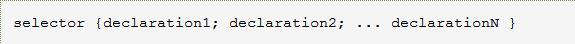
CSS commands mainly have 2 components: Selector & Declarations
Example:
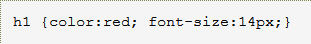
“h1” is the selector, “color” & “font-size” is the attribute, and “red” & “14px” is the value.
The semicolon “;” is the standard separator when declaring multiple attributes.
Declaring attributes on different lines is recommended:
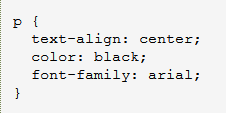 - Upper/Lower Case
CSS is NOT sensitive to Upper & Lower Case.
Exception: CSS is case sensitive when it deals with name of id or class. - Multiple Selection of Selectors
Look at the following code:
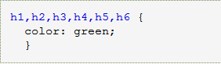
By adding a comma “,” between each 2 selectors, multiple selectors can be assigned and share the attributes declared. - Components:
CSS commands mainly have 2 components: Selector & Declarations
For more detailed insturctions and reference, please visit: W3C School Official Website.
Insertion of CSS Stylesheet
Since we have all the styles of HTML defined in an external .css file, we have to set up a link from the HTML Document to the CSS document in order to get the settings in it.
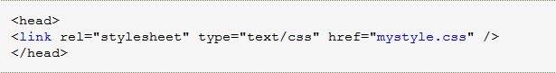In the HTML File, you can add "link" tag to setup a link to external stylesheet. The "link" tag sits at the beginning of the file.
With the example code above, external stylesheet “mystyle.css” is linked to the HTML file and will format the elements in the HTML.
If one or few HTML documents are trying to get the format in a stylesheet, we can also use the internal stylesheet link to get the connection. During this step we will use "style" tag in HTML document.
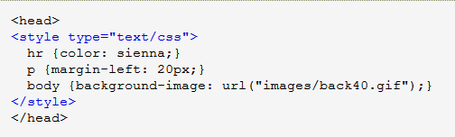
Selectors: The Major Locater in CSS
- Element Selectors
Look at the following code:
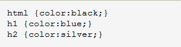
Element Selector is the most common selector in CSS. In the example we selected all the element h1, h2, and the HTML itself. - Class Selector
Look at the following code:
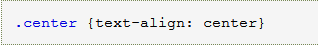
Users can select certain class by adding a period character “.” in front of the class name. In the example, class “center” is selected. - ID Selector
Look at the following code:
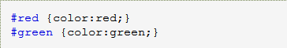
Users can select the id by adding a hash character “#” in front of the id name. In the example, red color is applied to id red, green color is applied to id green.
Be aware, id is unique in a single page, so you can use id selector to choose unique elements. - Attribute Selector
Look at the following code:
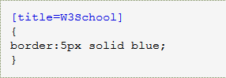
Users can select the HTML element with certain attributes with an attribute selector. In this case, all the element with “title=W3School” are selected and set a border with 5px solid blue.
CSS Colors
CSS recognizes colors as a set of values, RGB(a, b, c), in which a/b/c ranges from 0 to 255.
Easily we can calculate that there are 256*256*256 possibilities of color!Recall how we set a selector to a certain color:
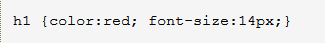We can assign a color to selector by typing a simple word.
We can also substitute the word description to the color’s hex code:
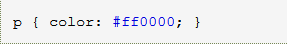
When we know the RGB value of certain color, we can use rgb (a, b, c) to define the color:
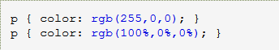
As we can see, the color processing ability of CSS is impressive, here are some examples for colors in CSS:
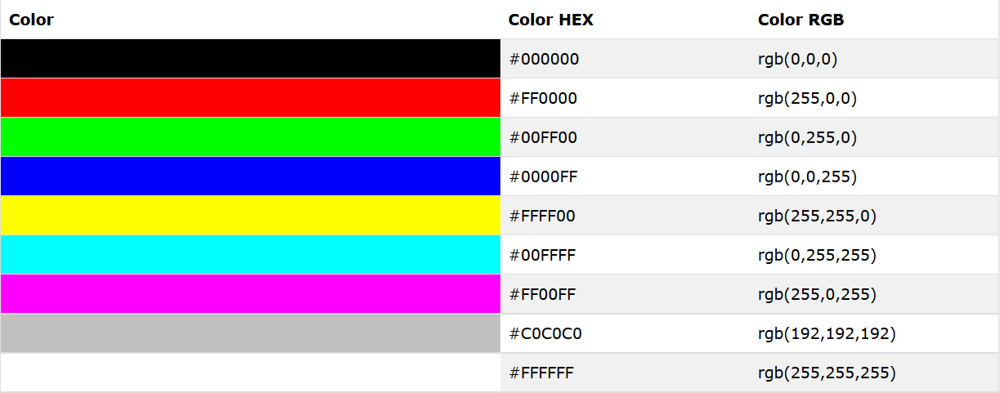
CSS Box Model
CSS can modified the box that contains the certain elements.
Here’s the overall structure of a typical element box:
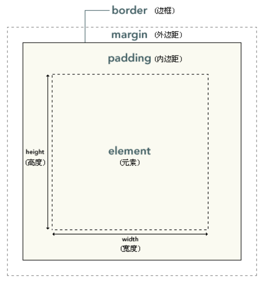In CSS, height and weight is applied to the element area. Other parts in the box model is not included. The unit used in the box model is the same as other sizing elements in CSS, pixel.
Here’s an example:
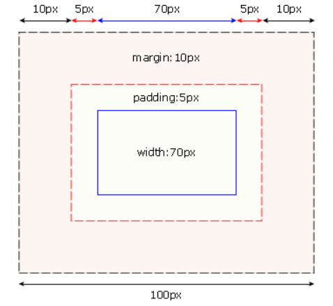
Corresponding implementation:
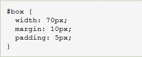
Reference
- "Cascading Style Sheets", Wikipedia.org, http://en.wikipedia.org/wiki/Cascading_Style_Sheets#CSS_5
- "CSS Tutorial", w3school.com.cn, http://www.w3school.com.cn/css/index.asp
All the code screenshots are from W3school Official Website. Thanks to W3school Online Tutorial!